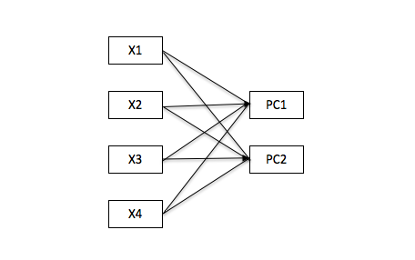
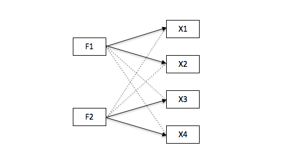
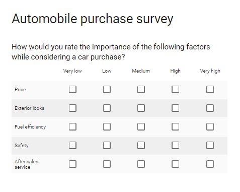
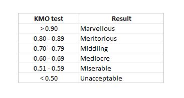
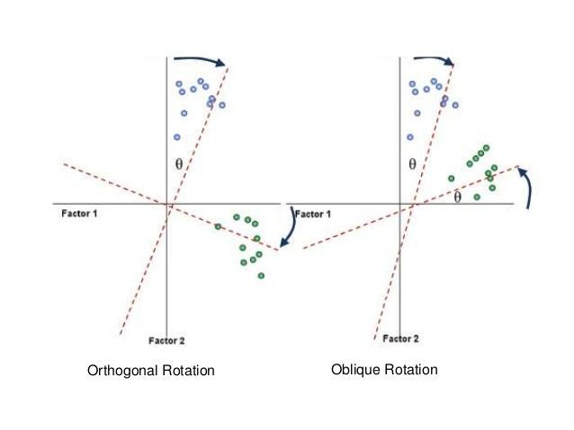
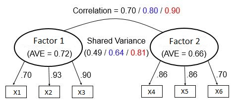
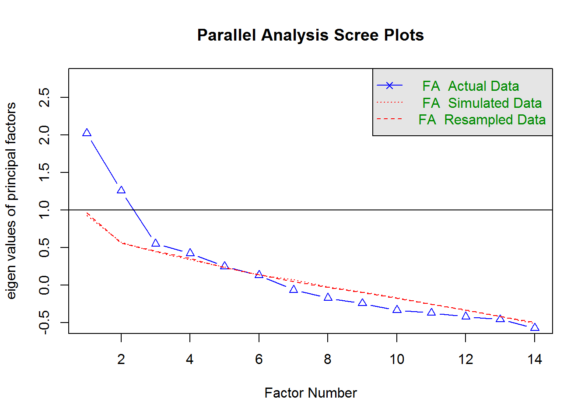
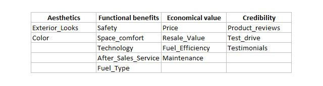

6. Phân tích nhân tố ẩn (factor analysis)¶
Phân tích nhân tố khám phá (exploratory factor analysis) là kỹ thuật giúp làm giảm số chiều dữ liệu (giảm số biến) nhằm tìm ra các biến ẩn (factor) đằng sau các nhóm biến ban đầu. Thực chất, phương pháp này được sử dụng để đo các khái niệm (concept) phức tạp và đa chiều mà ta không thể đo trực tiếp bằng 1 biến duy nhất, mà phải đo từ nhiều khía cạnh hay các hành vi là kết quả cụ thể của khái niệm đó (quan hệ nhân-quả)
6.1. So sánh giữa EFA và PCA¶
6.1.1. Các điểm giống nhau¶
- Đều là các kỹ thuật làm giảm dữ liệu, bằng cách sử dụng sự tương quan
giữa các biến ban đầu để gộp thành các biến mới. Với k biến ban đầu,
k biến mới sẽ được tạo ra. Tuy nhiên, ta sẽ chỉ giữ lại n biến mới
với n < k sao cho lượng thông tin vẫn được bảo toàn nhất có thể
(Eigen Value > 1 hoặc Cumulative Variance Percentage > 80 % như trong
PCA)
6.1.2. Các điểm khác nhau¶
6.1.2.1. Thuật toán¶
- Trong PCA, các thành phần chính (
principal components) là các tổ hợp tuyến tính của tất cả các biến ban đầu, sao cho PC1 là tổ hợp giữ được lượng thông tin nhiều nhất, PC2 được bổ sung vuông góc với PC1 nhằm thêm các thông tin còn thiếu trong PC1 và chứa lượng thông tin ít hơn PC1,…cứ như vậy, các PC được bổ sung sau sẽ vuông góc với các PC trước đó và chứa lượng thông tin giảm dần. Như vây các PC phải vuông góc với nhau, đồng nghĩa với việc các PC không được tương quan với nhau. - Trong EFA, các nhân tố (factor) là tổ hợp tuyến tính của các biến ban đầu có tương quan với nhau, sao cho mỗi nhân tố giữ lại được lượng thông tin nhiều nhất của 1 nhóm các biến ban đầu. Khác với PCA, các factor có thể không vuông góc với nhau, đồng nghĩa với việc các factor có thể tương quan với nhau
6.1.2.2. Mục đích sử dụng¶
- PCA được sử dụng để đơn giản hoá tập dữ liệu, sao cho với số biến mới
tối thiểu vẫn giữ lại được tối đa lượng thông tin của tập dữ liệu ban
đầu. Do đó, các biến mới (
principal components) không cần được đặt tên

- EFA được sử dụng để tìm ra biến ẩn (latent variable, factor, concept) đằng sau các biến đo được có tương quan với nhau (correlated observed variables, group of items). Nói cách khác, nhóm biến ban đầu phản ánh các khía cạnh của 1 khái niệm chung. Do đó các biến ẩn/ khái niệm chung này phải có ý nghĩa và gọi tên được

6.1.2.3. Ứng dụng trong kinh doanh¶
- PCA được ứng dụng để tìm ra số nhóm tối ưu cho các bài toán phân lớp khách hàng (K-means clustering), hoặc làm giảm số biến đầu vào cho các mô hình dự báo
- EFA thường được sử dụng trong trong lĩnh vực marketing và nghiên cứu thị trường, xây dựng các bộ câu hỏi cho survey để đánh giá nhận thức/ hành vi của khách hàng về sản phẩm/ dịch vụ như: mức độ hài lòng với sản phẩm, sự trung thành với nhãn hiệu, lý do khách hàng mua sản phẩm…Sau đó các biến mới cũng có thể được sử dụng làm biến đầu vào cho các mô hình

6.2. Các bước thực hiện¶
6.2.1. Kiểm định xem tập dữ liệu có đủ điều kiện cho factor analysis không¶
- Số quan sát tối thiểu là 50
- KMO test (0->1) kiểm tra mức độ tương quan của các biến ban đầu. KMO result > 0.5 là chấp nhận được

6.2.2. Chọn số factor¶
Cân nhắc các điểm sau:
- Ý nghĩa kinh doanh
- Eigen value > 1
- Scree plot tại điểm thay đổi độ dốc
6.2.3. Thực hiện factor analysis¶
Trong đó chọn 1 trong 2 phương pháp xoay vector sau:
- Chọn Orthogonal (rotate = “varimax”) khi ta cho rằng các factors không có tương quan với nhau
- Chọn Oblique (rotate = “oblimin”) khi ta cho rằng các factors có tương quan với nhau (chủ yếu chọn phương pháp này)

=> Xem loadings (correlation value) xem có hiện tượng 1 biến ban đầu tương quan mạnh với nhiều hơn 1 factor không (high multi-loadings)
6.2.4. Đánh giá độ tin cậy và độ chính xác của mô hình¶
Ta mong đợi các biến đo được phải tương quan với nhau theo từng nhóm, đồng nghĩa chúng đo cùng 1 khái niệm (độ tin cậy, reliability) và phải đo đúng khái niệm ta cần (độ chính xác, validity)
Độ tin cậy được đo bằng chỉ số Cronbach’s alpha. (:raw-latex:`alpha`) >= 0.3 là pass. Ta có thể cân nhắc loại bỏ 1 vài biến ban đầu không có tương quan với các biến khác, tuy nhiên phải đánh đổi bằng thông tin bị mất đi
Độ chính xác được đo theo 2 tiêu chí:
- Convergent validity: Chỉ số AVE (Average Variance Extracted) của các factor phải > 0.5 đồng nghĩa với việc các items giải thích được ít nhất 50% độ biến thiên của factor đó
- Discriminant validity: Chỉ số AVE của từng factor phải > Shared variance giữa các factor, đồng nghĩa với việc các factor phải tương quan mạnh hơn với các items đo chính factor đó chứ không tương quan nhiều với các items đo các factor khác
Ví dụ:

- Reliability test: Với cả 2 factor, AVE đều > 0.5 => nhóm các item (x1,x2,x3) và (x4,x5,x6) đều giải thích được trên 50% độ biến thiên của 2 factor tương ứng => good
- Validity test: Xét 3 trường hợp của Shared Variance
- Shared Variance = 0.49 (< 0.72 và < 0.66) => good
- Shared Variance = 0.64 (< 0.72 và < 0.66) => pass
- Shared Variance = 0.90 (> 0.72 và > 0.66) => fail
6.2.5. Đặt tên cho các factor¶
Tùy theo kết quả loadings các nhóm biến để đặt tên cho biến ẩn (khái niệm) sao cho biến ẩn có ý nghĩa tổng hợp nhất
Lưu ý: Các bước 2 -> 4 có thể phải thực hiện nhiều lần để có kết quả ưng ý
6.3. Thực hành trong R¶
Sử dụng tập dữ liệu là kết quả phản hồi survey của 90 KH cho 14 tiêu chí họ ưu tiên khi chọn mua ô tô (bao gồm giá, tính an toàn, tiết kiệm nhiên liệu, dịch vụ hậu mãi…). Survey được thiết kế dưới dạng thang đo Likert với 5 lựa chọn (5-point Likert scale) từ “Very low” (tương ứng với 1) đến “Very high” (tương ứng với 5)
library(tidyverse)
library(psych)
library(GPArotation)
load("data/efa-df.Rda")
df <- efa.df
rm(efa.df)
df %>% head
## Price Safety Exterior_Looks Space_comfort Technology After_Sales_Service
## 1 4 4 5 4 3 4
## 2 3 5 3 3 4 4
## 3 4 4 3 4 5 5
## 4 4 4 4 3 3 4
## 5 5 5 4 4 5 4
## 6 4 4 5 3 4 5
## Resale_Value Fuel_Type Fuel_Efficiency Color Maintenance Test_drive
## 1 5 4 4 2 4 2
## 2 3 4 3 4 3 2
## 3 5 4 5 4 5 4
## 4 5 5 4 4 4 2
## 5 5 3 4 5 5 5
## 6 3 4 3 2 3 2
## Product_reviews Testimonials
## 1 4 3
## 2 2 2
## 3 4 3
## 4 5 3
## 5 5 2
## 6 2 3
- Bước 1: Tập dữ liệu có 90 quan sát, đủ lớn cho phân tích. Kiểm tra KMO test = 0.61 chỉ ở mức dưới trung bình nhưng đủ cho phân tích
KMO(df)
## Kaiser-Meyer-Olkin factor adequacy
## Call: KMO(r = df)
## Overall MSA = 0.61
## MSA for each item =
## Price Safety Exterior_Looks
## 0.72 0.47 0.55
## Space_comfort Technology After_Sales_Service
## 0.61 0.65 0.62
## Resale_Value Fuel_Type Fuel_Efficiency
## 0.63 0.68 0.62
## Color Maintenance Test_drive
## 0.56 0.61 0.64
## Product_reviews Testimonials
## 0.69 0.50
- Bước 2: Lựa chọn số factor bằng cách visualise eigen value trong scree plot
parallel <- fa.parallel(df, fm = 'minres', fa = 'fa')

## Parallel analysis suggests that the number of factors = 5 and the number of components = NA
=> Như vậy ta có thể chọn từ 2 hoặc 3 factor được giữ lại
- Bước 3: Thực hiện factor analysis với 3 factors
three.fa <- fa(df,nfactors = 3, rotate = "oblimin", fm="minres")
print(three.fa$loadings, cutoff = 0.3) # chỉ hiển thị các giá trị loading > 0.3
##
## Loadings:
## MR1 MR2 MR3
## Price 0.444
## Safety 0.311
## Exterior_Looks
## Space_comfort 0.832
## Technology 0.342
## After_Sales_Service 0.460
## Resale_Value 0.599
## Fuel_Type 0.573
## Fuel_Efficiency 0.655
## Color 0.464
## Maintenance 0.668
## Test_drive 0.328
## Product_reviews 0.424
## Testimonials 0.742
##
## MR1 MR2 MR3
## SS loadings 2.015 1.605 0.972
## Proportion Var 0.144 0.115 0.069
## Cumulative Var 0.144 0.259 0.328
Từ kết quả loadings của 3 factors mới, ta có thể thấy 1 số biến có tương quan cùng lúc với cả 2 factor mới (double loading)
Thực hiện lại factor analysis với 4 factors => Ta thấy không còn hiện tượng double loading nữa. Như vậy ta sử dụng model với 4 factor
four.fa <- fa(df,nfactors = 4, rotate = "oblimin", fm="minres")
print(four.fa$loadings, cutoff = 0.3) # chỉ hiện thị các giá trị loading > 0.3
##
## Loadings:
## MR1 MR2 MR4 MR3
## Price 0.544
## Safety -0.331 0.358
## Exterior_Looks -0.548
## Space_comfort 0.782
## Technology 0.358
## After_Sales_Service 0.537
## Resale_Value 0.729
## Fuel_Type 0.575
## Fuel_Efficiency 0.434 0.308
## Color 0.731
## Maintenance 0.562
## Test_drive 0.365
## Product_reviews 0.345 0.364
## Testimonials 0.685
##
## MR1 MR2 MR4 MR3
## SS loadings 1.639 1.637 1.053 0.968
## Proportion Var 0.117 0.117 0.075 0.069
## Cumulative Var 0.117 0.234 0.309 0.378
- Bước 4: Đánh giá độ tin cậy và chính xác của mô hình
(:raw-latex:`\alpha`) = 0.61 cho thấy mô hình đáng tin cậy. Xem thêm bảng Reliability if an item is dropped ta thấy nếu loại bỏ các biến Safety, Exterior_Looks, Testimonials có thể cải thiện (:raw-latex:`\alpha`) tuy nhiên rất ít => Ta chọn giữ lại tất cả các biến này để không bị mất thông tin
alpha(df,check.keys=TRUE)
##
## Reliability analysis
## Call: alpha(x = df, check.keys = TRUE)
##
## raw_alpha std.alpha G6(smc) average_r S/N ase mean sd
## 0.61 0.62 0.71 0.1 1.6 0.059 3.7 0.34
##
## lower alpha upper 95% confidence boundaries
## 0.49 0.61 0.73
##
## Reliability if an item is dropped:
## raw_alpha std.alpha G6(smc) average_r S/N alpha se
## Price 0.59 0.59 0.69 0.101 1.5 0.063
## Safety- 0.62 0.64 0.72 0.120 1.8 0.059
## Exterior_Looks- 0.63 0.65 0.72 0.123 1.8 0.056
## Space_comfort 0.60 0.61 0.68 0.106 1.5 0.061
## Technology 0.60 0.61 0.70 0.107 1.6 0.060
## After_Sales_Service 0.58 0.59 0.68 0.099 1.4 0.064
## Resale_Value 0.61 0.61 0.69 0.107 1.6 0.059
## Fuel_Type 0.60 0.61 0.70 0.108 1.6 0.060
## Fuel_Efficiency 0.53 0.54 0.64 0.084 1.2 0.072
## Color 0.57 0.59 0.68 0.099 1.4 0.065
## Maintenance 0.55 0.56 0.65 0.090 1.3 0.069
## Test_drive 0.60 0.61 0.70 0.106 1.5 0.061
## Product_reviews 0.56 0.57 0.67 0.094 1.3 0.067
## Testimonials 0.62 0.63 0.71 0.116 1.7 0.058
##
## Item statistics
## n raw.r std.r r.cor r.drop mean sd
## Price 90 0.41 0.45 0.382 0.3032 4.2 0.59
## Safety- 90 0.19 0.20 0.073 0.0556 1.8 0.64
## Exterior_Looks- 90 0.16 0.16 0.022 -0.0069 2.2 0.82
## Space_comfort 90 0.32 0.38 0.342 0.1872 4.0 0.65
## Technology 90 0.35 0.37 0.269 0.1735 4.2 0.87
## After_Sales_Service 90 0.45 0.48 0.433 0.3265 4.4 0.65
## Resale_Value 90 0.44 0.38 0.326 0.1971 3.7 1.22
## Fuel_Type 90 0.30 0.36 0.280 0.1643 4.1 0.65
## Fuel_Efficiency 90 0.69 0.69 0.710 0.5863 3.9 0.82
## Color 90 0.51 0.48 0.437 0.3428 3.7 0.92
## Maintenance 90 0.62 0.61 0.603 0.5001 4.0 0.77
## Test_drive 90 0.44 0.39 0.302 0.2283 3.4 1.11
## Product_reviews 90 0.56 0.55 0.511 0.4073 4.1 0.89
## Testimonials 90 0.26 0.25 0.149 0.0839 3.9 0.87
##
## Non missing response frequency for each item
## 1 2 3 4 5 miss
## Price 0.00 0.00 0.10 0.63 0.27 0
## Safety 0.00 0.00 0.12 0.56 0.32 0
## Exterior_Looks 0.01 0.02 0.30 0.47 0.20 0
## Space_comfort 0.00 0.01 0.18 0.61 0.20 0
## Technology 0.01 0.03 0.14 0.41 0.40 0
## After_Sales_Service 0.00 0.01 0.06 0.44 0.49 0
## Resale_Value 0.06 0.11 0.28 0.21 0.34 0
## Fuel_Type 0.00 0.00 0.17 0.58 0.26 0
## Fuel_Efficiency 0.01 0.03 0.24 0.50 0.21 0
## Color 0.02 0.08 0.22 0.50 0.18 0
## Maintenance 0.00 0.01 0.27 0.44 0.28 0
## Test_drive 0.02 0.23 0.22 0.33 0.19 0
## Product_reviews 0.00 0.08 0.10 0.43 0.39 0
## Testimonials 0.01 0.04 0.24 0.46 0.24 0
Có thể tính toán thêm AVE và Shared Variance cho validity test
- Bước 5: Đặt tên cho các biến ẩn
